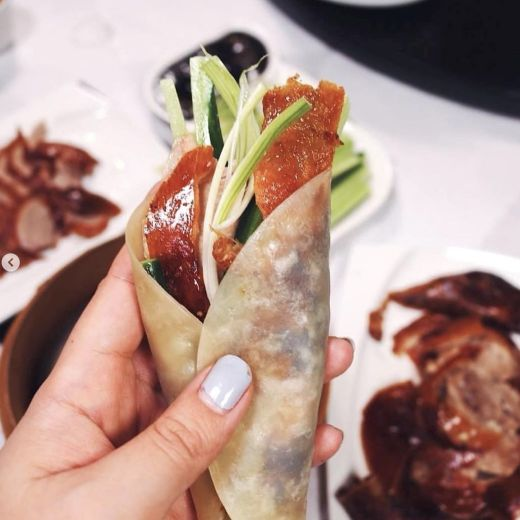
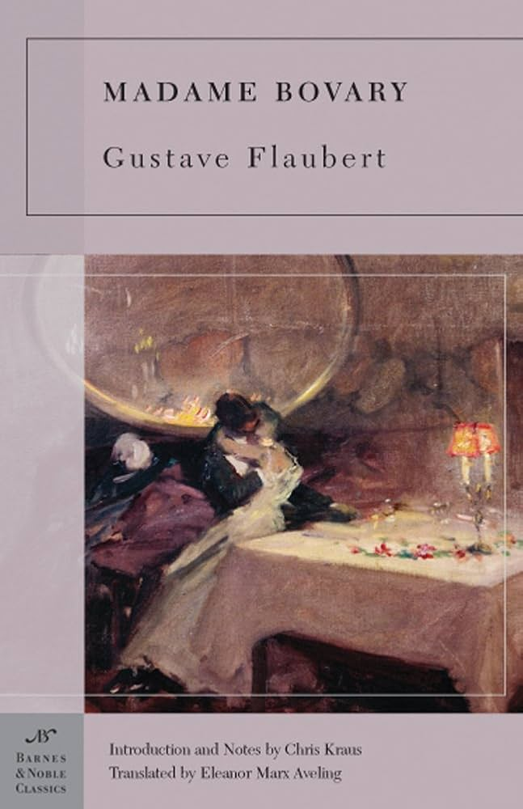

My Favorite Restaurant is Jiang Nan(江南)
The main reason I love it is very simple: the food is absolutely delicious!
By the way, there is one in Boston at
177 Tremont St, Boston, MA 02111 .
If you have time, you should definitely give it a try!
Here's a fake link! Click
 My favorite food is Peking Duck. The best way to enjoy it is by wrapping thin pancakes around slices of duck, together with scallions and a bit of sweet sauce. The most delicious part of the duck is the crispy breast skin. I like to dip it in sugar — it melts in the mouth and tastes amazing.
| Book Name | Cover Image | Author | Summary |
|---|---|---|---|
| Anna Karenina | |
Leo Tolstoy | A tragic love story set in Russian high society, following Anna’s affair with Vronsky and her struggle with societal expectations. |
| Gone with the Wind | Margaret Mitchell | A sweeping historical novel set during the American Civil War, following the life and struggles of Scarlett O'Hara. | |
| Madame Bovary |  | Gustave Flaubert | A story about Emma Bovary, a woman trapped in a provincial life, whose romantic dreams lead to disillusionment and tragedy. |
| The Painted Veil | W. Somerset Maugham | A novel about love, betrayal, and self-discovery, set against the backdrop of a cholera epidemic in China. |